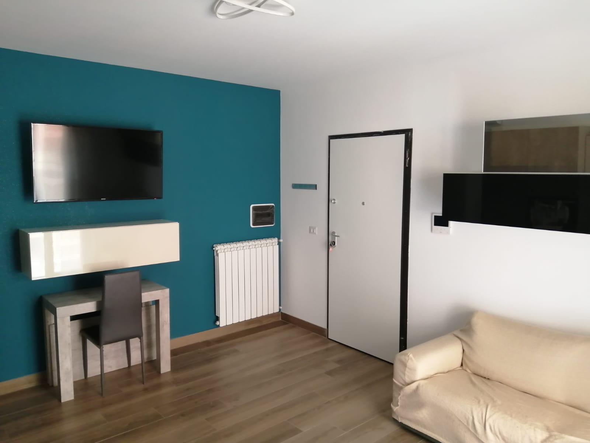

Where to stay for the Next Gen ATP Finals in Reggio Calabria
From 9 to 13 December 2026 the Next Gen ATP Finals are played at the PalaCalafiore in Reggio Calabria. If you are coming with friends, family or colleagues, Casa di Mary is a whole apartment for up to 6 guests, with 2 bedrooms, 2 bathrooms and a private parking space right downstairs.



The tournament at a glance
- Dates: 9-13 December 2026, five days of matches.
- Venue: PalaCalafiore, Via Nazionale Pentimele, in the north of Reggio Calabria.
- Capacity: about 8,450 seats.
- Tickets: on sale since 25 September 2026 on the official tournament website.
Getting to the PalaCalafiore from Casa di Mary
Casa di Mary is in Via Sbarre Inferiori, in the south of the city. The PalaCalafiore is in the north, about 8 km away, so it is not walking distance. Here is how to get there:
- By car: the easiest option. You leave from a private parking space and, late at night, you find it free again right downstairs. With thousands of spectators in town, parking in the city centre will be hard to find during the tournament.
- By taxi: the right choice for evening sessions if you don't have a car.
- By train: ideal for arriving in Reggio Calabria. Frecciarossa, Frecciargento and Italo high-speed trains stop at Reggio Calabria Centrale, 900 m (about a 13-minute walk) from the apartment. We don't recommend it for getting back from evening matches: the last trains from Pentimele leave early compared with the end of the sessions.
- By plane: Reggio Calabria Airport (Aeroporto dello Stretto) is about 4 km from the apartment.

Why an apartment instead of a hotel
- Share the cost: up to 6 people in one place, with two separate bedrooms and two bathrooms.
- Fully equipped kitchen: breakfast whenever you like and dinner after the match, even late.
- Winter comfort: independent heating, Wi-Fi, Smart TV.
- Self check-in: arrive whenever you like from 3:00 PM, no appointment needed.
- Elevator and wheelchair access.
Travelling as a couple? Take a look at the Medusa Suite: master bedroom with en-suite bathroom, plus kitchen, living room and veranda all to yourselves.
Secure your tournament dates
For the tournament dates it pays to book early. Send us your dates and number of guests: we reply within a few hours with availability and rates.
Casa di Mary is a private holiday rental and is not affiliated with the ATP or the tournament organisers. Event information is up to date as of September 2026: please check times and schedule on the official channels. CIN IT080063C2OE9OIFAH · Via Sbarre Inferiori 131, 89129 Reggio Calabria, Italy.